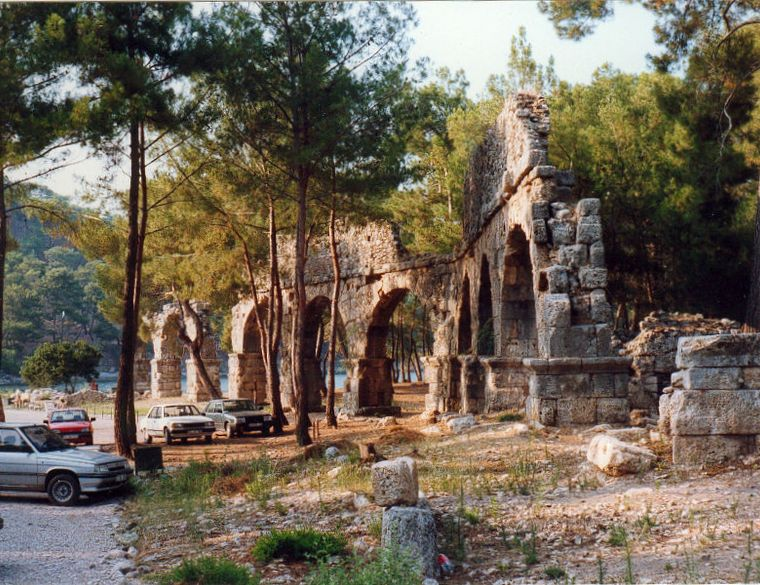
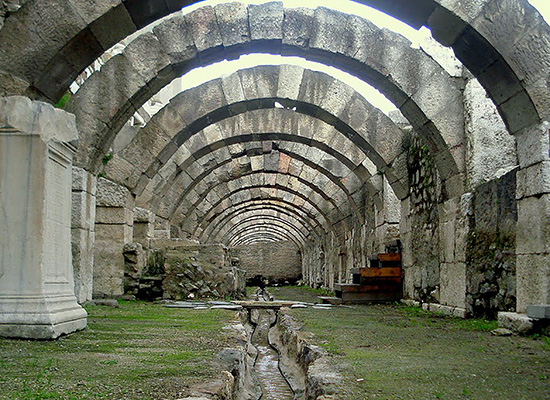
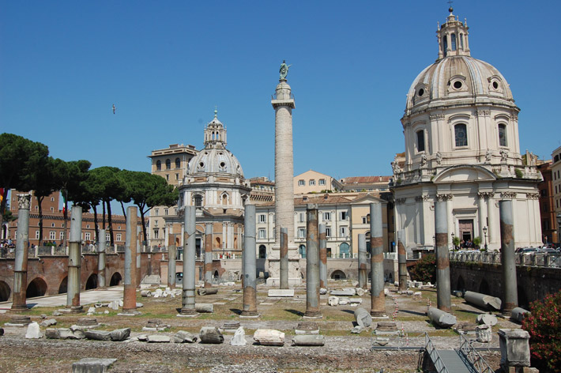
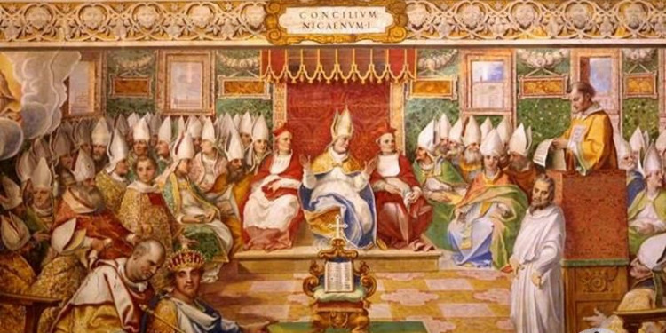

Bazı Bilgiler
Phaselis
Pamfamilya; Likya’nın sınır komşusu, Phaselis’i içine alan bölge. İsmini yazar tarihçi, Roma İmparatoru komutanı Pilinus’un kızlarından aldığı düşünülüyor.
Agora
Antik kentlerde düz bir alana kurulan hem halk meclisinin toplandığı aynı zamanda etrafında satıcıların, pazarın olduğu sütunlarla ve ağaçlarla çevrili pazar yeridir.
Bazilika
Taşıma kapasitesi büyüklüğüne göre kiliselerin sınıflandırılmış kilise tiplerinden biri. Bazilikalar erken Roma döneminde adli davaların görüldüğü toplanma yerlerine denirdi. İsmini de yargıç Basile’den almaktadır.
Kalkedon Konsili
Kadıköy’de yapılan patrik toplantısı.Hıristiyan dünyasının İstanbul’un fethinden tam 1000 yıl önce yaptığı tüm mezheplerle olan ekümenlik toplantısıdır (Roma Katolikleri, Batı Ortodoksları)